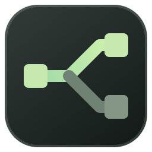

ВАРИАНТ A
Terminal
Тёмная инженерная утилита. Команды, маршруты и спокойный сигнальный цвет.
В каждом варианте — новая иконка, монохромный знак для строки меню и работающий прототип сайта. Сравните характер и читаемость, затем откройте направление целиком.
Сравнить обе иконки в реальном размере ↗
Тёмная инженерная утилита. Команды, маршруты и спокойный сигнальный цвет.
Рабочий стол сетевого инженера. Панели, геометрия соединений и тёплый акцент.